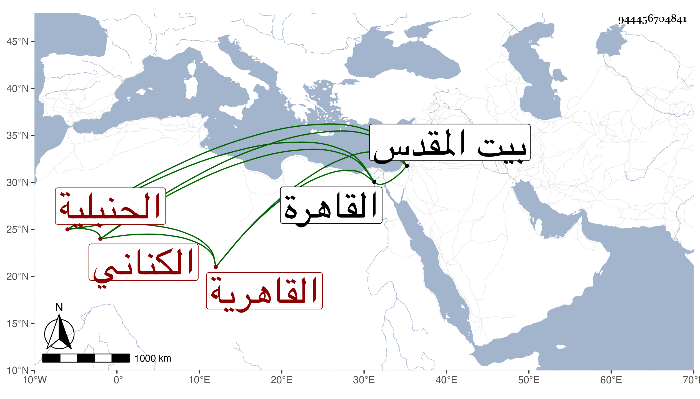

0902Sakhawi.DawLamic.ITO20230111-ara1.EIS1600.944456704841
Biography ID: 944456704841
482
عائشة ابنة علي بن محمد بن علي بن عبد الله بن أبي الفتح بن هاشم بن إسماعيل بن إبراهيم بن نصر الله بن أحمد أم عبد الله وأم الفضل المدعوة ست العيش ابنة العلاء أبي الحسن الكناني القاهرية الحنبلية الماضي ولدها العز أحمد وشقيقها عبد الله وهما سبطا أبي الحرم القلانسي أمهما سودة . ولدت في سنة إحدى وستين وسبعمائة بالقاهرة وأحضرت على جدها لأمها أبي الحرم خمسة مجالس من ثمانية من الفوائد الغيلانيات وعلى العز أبي عمر بن جماعة والموفق الحنبلي الأولين من فوائد ابن بشران وعلي أولهما فقط قطعة من مسند الشافعي وعلى الحراوي المجلس الاول من فضل الخيل للدمياطي في آخرين . وأجاز لها ابن قاضي الجبل والخلاطي وجماعة من الشاميين والمصريين وقرأت بعض القرآن وتعلمت الخط وحدثت سمع عليها الأئمة ، وخرج لها الزين رضوان جزءا فيه عشاريات وتساعيات مبتدئا بالمسلسل ، وذكرها شيخنا في معجمه فبين بعض مرويها ، وقال في أنبائه أكثر عنها الطلبة بآخره وكانت خيرة وتكتب خطبا جيدا ، وكذا ذكرها المقريزي في عقوده وقال كانت امرأة خيرة صالحة تكتب كتابة حسنة ولها فهم مليح انتهى ، وكانت خيرة صالحة فاضلة كاتبة للمنسوب حسبما رأيت ورقة من خطها ، فهمه مستحضرة للسيرة النبوية تكاد أن تذكر الغزوة بتمامها ذاكرة لأكثر الغيلانيات وغيرها من الأحاديث حافظة لكثير من الأشعار سيما ديوان البهاء زهير سريعة الحفظ بحيث كانت تقول حفظت خمس أبيات مواليا بعشرين قرينة من مرة واحدة . من بيت علم ورواية ؛ كل ذلك مع متانة الديانة وكثرة التعبد والمحاسن الجمة قل أن ترى العيون في النساء مثلها . وقد حجت وزارت مع ولدها بيت المقدس والخليل غير مرة وحدثت هناك أيضا وأخذ عنها غير واحد من الأعيان ، قال البقاعي كتبت الكتابة الحسنة وكانت من الذكاء على جانب كبير تطالع كتب الفقه فتفهم وتحفظ شعرا كثيرا مرت على ديوان البهاء زهير ومصارع العشاق والسيرة النبوية لابن الفرات وسلوان المطاع لابن ظفر فكانت تحفظ غالبها وتذاكر به ، وكانت خيرة دينة من صباها إلى أن توفيت على سمت واحد في ملازمة الصلاة والعبادة والأذكار ، ولم تتزوج بعد وفاة القاضي برهان الدين ورأت في صغرها في الخرقى أن جميع النجاسات تغسل سبعا فرسخ ذلك عندها فكانت تشدد في أمر التطهير ؛ ماتت بعد عصر يوم الأربعاء سادس عشري ذي القعدة سنة أربعين ودفنت من الغد رحمها الله وإيانا . وهي خاتمة أصحاب جدها والذين بعده بالسماع .
